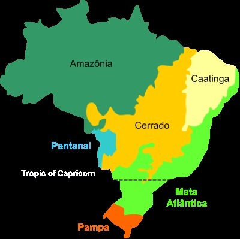

O assunto meio ambiente vem sendo abordado cada vez mais nos meios de comunicação, pois a cada ano que passa ele vem sofrendo com ações humanas que acaba prejudicando cada vez mais com a extinção de animais e plantas que são extraídas do meio dela para ser vendida ou ir fora, com esses problemas as florestas perdem espaço cada vez mais para as cidades e para os agricultores, com isso trazemos informação sobre 4 biomas brasileiras entre eles os Pampas gaúchos, Pantanal, Mata Atlântica, Caatinga. Para a realização da pesquisa foi realizada a divisão de tarefas entre os integrantes do grupo, sendo realizado os Pampas por Breno Lima, Pantanal por Artur Fagundes, Caatinga por André Barros e Mata Atlântica por Kalani.
Espero que goste do nosso site e aprenda um pouco sobre cada bioma abordado.